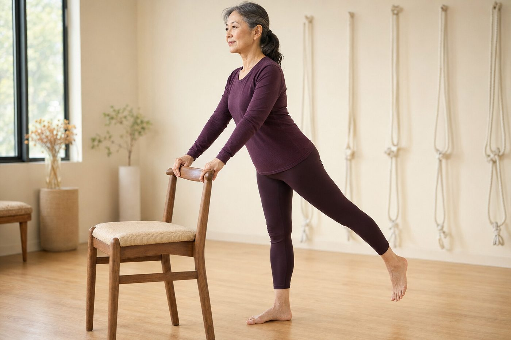

開髖時突然想哭，情緒真的存在髖部嗎？
老師說：「再停一個呼吸。」
你其實已經想起來了。
但你偷看了一眼，整排的人都還沒動。
你最記得的是哪一刻？
拉到想退，卻還在等口令
先把動作退小一點，回到你能自己停住的位置。想休息，可以按老師教過的退出方式慢慢離開。
你可以說「我想先退出這個姿勢。可以提醒我怎麼出來嗎？」
老師一靠近，我就繃住
老師「需要我幫你調一下嗎？」
你「今天先用說的就好，我想自己試。」
可以先說你希望怎麼被引導。想休息也可以直接開口。
坐起來了，卻不知道怎麼接回去
先留在坐得舒服的位置。等老師帶到你熟悉的動作，再決定要不要跟上。
你可以問「如果這段先休息，我可以從哪個動作接回去？」
開髖時突然想哭，可能是姿勢感受、呼吸、當下心情或回憶同時變得明顯，單憑落淚無法推知原因，也沒有證據顯示情緒儲存在髖部組織。先停一個動作，看看換姿勢或休息後有何變化。若情緒反覆困擾或影響生活，可以找心理健康專業人員談談。

開髖時的身體感受與情緒可以怎麼區分？
開髖時，大腿相對骨盆的角度改變，腹股溝、臀部或大腿內側可能有牽拉感。可以記下哪個位置先有感、換成有支撐的姿勢後是否舒服些。想知道不同練習主要在動哪裡，可參考開髖動作與骨盆支撐。
展開感受與下一步對照
👆 手機版可左右滑動
| 當下感受 | 可以怎麼做 | 可以留意什麼 |
|---|---|---|
| 姿勢拉扯感太強 | 縮小幅度或停下。 | 換姿勢後哪一處感受改變？ |
| 鼻酸或想哭 | 坐起來休息，按自己的意願決定要不要繼續。 | 當時的情境和感受，記得多少就寫多少。 |
| 情緒反覆困擾或影響生活 | 找心理健康專業人員討論。 | 可以從對日常的影響說起。 |
練習到一半情緒上來，怎麼留一點空間？
可以先把姿勢做小，或直接坐起休息。如果今天想找一個可以隨時退出、比較有支撐的休息方式，可以看看修復瑜伽怎麼用輔具安排休息，再決定是否想試。休息後感受沒有改變，也可以今天先到這裡。
常見問題
哭出來表示釋放了創傷嗎？
單靠一次落淚無法判斷。有需要時，可以在自己信任的專業支持下談感受。
沒有情緒反應，代表練習白做了嗎？
每個人的感受不同。只注意到姿勢或呼吸的變化，也是一種練習經驗。
下次想留一點休息空間？
若另外想記錄平日坐、站或活動的感受，可做免費約 2 分鐘體態訊號掃描。免登入、免加 LINE，可用 3 天觀察卡。